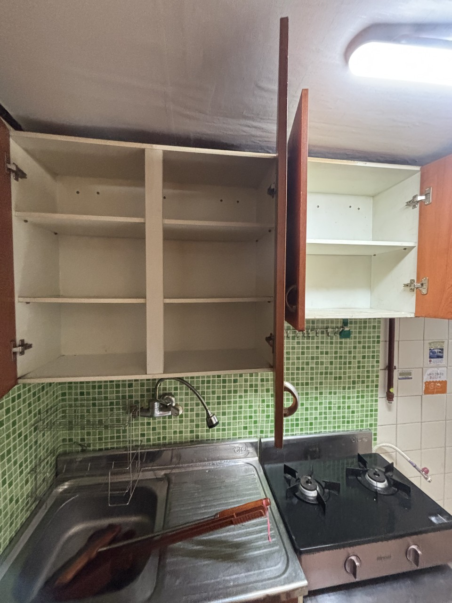

구리 북부는 거리가 짧아 당일 연속 상담이 가능합니다. 다만 갈매 단지 반출 예약 시간과 사노동 차량 진입이 겹치면 일정을 나눠 잡습니다.
구리 북부 · 갈매역·사노동
갈매·동구권 유품정리,
갈매·동구권 유품정리,
북부 주거권 반출 상담
구리 북부는 갈매역 신도시 단지와 왕숙천 방향 사노동 주택지가 한 생활권처럼 붙어 있습니다. 엘리베이터 사용이 되는 갈매동과, 골목·마당 진입이 먼저인 동구동은 같은 서비스라도 작업 순서가 다릅니다. 구리 올바른정리는 갈매·동구권 유품정리와 쓰레기집청소를 현장 형태로 나눠 안내합니다.
SERVICE
구리시 갈매·동구권에서 맡기는 작업
북부권은 신축 단지 이사 잔짐과 외곽 주택 장기 방치 문의가 함께 들어옵니다.
유품정리
갈매 아파트형 유품 분류
갈매지구는 세대 짐이 많고 보관 박스가 한꺼번에 나오는 경우가 많습니다. 서류·사진·통장은 먼저 구분해 두고, 가구는 지하주차장 동선에 맞춰 내립니다. 동구동 단독주택은 마당·창고 짐까지 포함해 분류합니다.
쓰레기집청소
사로·갈매 적치물 반출
갈매동은 단지 반출 예약과 화물 엘리베이터 시간이 비용을 좌우합니다. 동구동은 왕숙천 방향 진입로 폭과 주차 가능 지점을 먼저 봅니다. 적치량이 많으면 쓰레기집청소로 한 번에 상차합니다.
PRICE
갈매·동구권 비용이 달라지는 지점
갈매 대단지는 엘리베이터 대기, 동구동은 차량 진입 거리가 견적에 반영됩니다.
* 부가세 별도 · 시작가이며 현장 확인 후 확정
유품정리
45만원 부터~
갈매 아파트는 세대 짐 양, 동구 주택은 창고·마당 포함 여부를 기준으로 시작합니다.
고독사 특수청소
80만원 부터~
밀폐된 방 오염이 있으면 소독·탈취를 별도 공정으로 잡습니다.
쓰레기집·일반폐기물
30만원 부터~
단지 지하 반출과 골목 수동 운반이 섞이면 인원 배치가 달라집니다.
GUIDE
갈매·동구권에서 유품정리와 쓰레기집청소는 어떻게 다른가요?
북부 두 동의 건물 형태가 달라, 질문도 현장별로 나눠 답하는 것이 정확합니다.
구리 북부에서 유품정리를 맡기는 대표 이유는 무엇인가요?
갈매동은 상속 후 전월세 전환, 동구동은 사노동 단독주택 매매 전 공실 만들기가 많습니다. 유품정리는 남길 물건과 버릴 물건을 나눈 뒤 공간을 비우는 작업입니다. 쓰레기집청소는 이미 적치된 생활폐기물을 분류·포장·상차하는 반출 작업입니다. 갈매 아파트에서 두 작업이 하루에 이어지는 경우도 있습니다.
갈매역 대단지와 사노동 주택, 반출 방식이 왜 다른가요?
갈매역 일대는 지하주차장 높이, 화물용 승강기, 단지 반출 가능 시간이 먼저 확인됩니다. 사노동은 왕숙천을 끼고 길이 좁아지는 구간이 있어 1.5톤 이하 차량만 들어가는 집도 있습니다. 같은 구리시라도 북부는 단지형과 주택형이 나란히 있어, 사진만으로 동선을 단정하지 않습니다.
갈매·동구권 쓰레기집청소는 어떤 신호가 있을 때 필요한가요?
베란다와 방에 쓰레기 봉투가 겹쳐 있거나, 싱크대·화장실을 쓰기 어려울 정도로 물건이 쌓인 상태면 일반 청소가 아니라 쓰레기집청소 범위입니다. 갈매 신축 임대의 경우 이전 거주자 잔여물이 남는 사례가 있고, 동구동은 빈집 창고에 농기구·고가구가 함께 있는 사례가 있습니다.
북부권 비용에 영향을 주는 조건은 무엇인가요?
유품정리는 45만원부터, 일반 반출은 30만원부터입니다. 갈매동은 층수와 엘리베이터 사용 가능 여부, 동구동은 마당까지 내리는 거리와 보조 인원이 금액을 바꿉니다. 오염·악취가 있으면 고독사 특수청소 공정이 추가됩니다.
상담 전에 북부 현장에서 찍어 두면 좋은 장면은?
갈매동은 세대 내부 전체, 현관, 엘리베이터 홀, 지하 하역 위치를 찍어 주세요. 동구동은 대문 앞 도로 폭, 마당, 창고 내부가 중요합니다. 남길 상자 위치를 미리 표시해 주시면 유품 분류 시간이 줄어듭니다.
PROCESS
갈매·동구권 작업 순서
북부는 단지 규칙과 골목 진입을 상담 단계에서 먼저 나눕니다.
STEP 01
생활권 확인갈매 단지인지 사로 주택인지부터 구분해 반출 수단을 정합니다.
STEP 02
남길 물건 표시상속 서류와 보관 박스를 작업 동선 밖으로 빼 둡니다.
STEP 03
분류 후 상차유품 정리 다음 적치물·가구를 차량 크기에 맞춰 내립니다.



FAQ
갈매·동구권에서 자주 묻는 질문
검색·AI 답변에 쓰일 수 있도록 이 지역 기준으로 짧게 정리했습니다.
짐 양과 보관 물건 수에 따라 반나절에서 하루입니다. 지하주차장 사용이 되면 대형 가구도 당일 반출하는 경우가 많습니다.
됩니다. 창고·축사형 잔여물이 있으면 가정폐기물과 별도 품목을 나눠 처리합니다.
유품정리는 45만원부터입니다. 갈매 대단지에서 폐기물 양이 많으면 반출 비용이 별도로 더해질 수 있습니다.